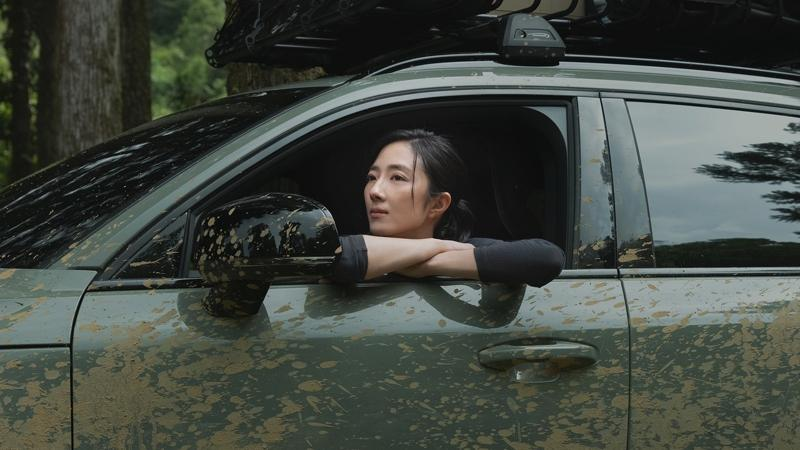
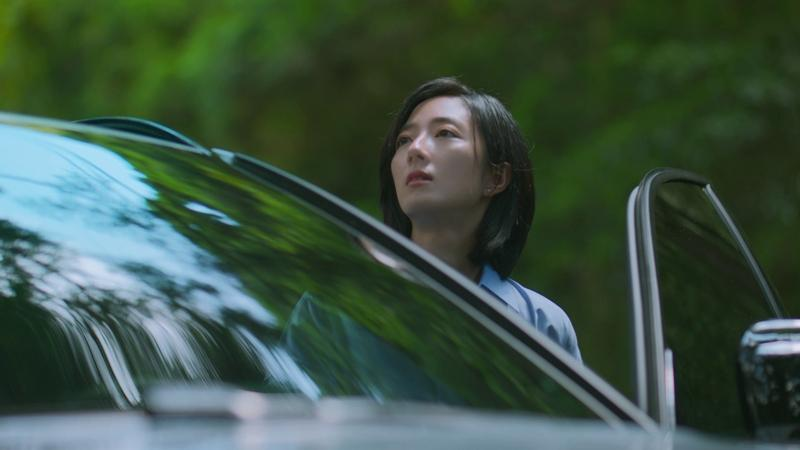

金马影后桂纶镁在名导卢贝松新片「台北追缉令」挑战街头飞车戏码，但私底下的她喜欢平静的生活。她日前为代言的新车拍摄形象影片，她透露如果不当演员的话，梦想工作是「生态观察员」。
桂纶镁在影片中化身「生态观察员」，前进山林与大自然接触，事实上这样的身分，正是她回想当初没有进入演艺事业的话，会义无反顾一头栽进的领域，坦言：「如果真的有平行宇宙，我希望能够做一个与环境对话的人。」
桂纶镁对于想当生态观察员的「向往」其实也并不完全是过去式，平时因为自己演员身分关系，虽然让她更容易在镁光灯下获得称赞，但她却因此更习惯在收工后跟自己独处对话、探索内心深处的自己。只要有空闲时间，桂纶镁就会想暂时远离尘嚣奔向山林，通过自我对话及沉淀，让心灵能获得平静及修复，正因为如此，想做「生态观察员」的念头一直在她心里未曾散去，她表示：「因为在山林里，我总是能获得很棒的能量，它让我很宁静，可以把一切都放下来，然后只有纯然的我与这个世界。这时候就会兴起一个念头，总觉得，很想要守护自然中的万物，并静静地身处其中观察、等待跟倾听，我很期盼过着这样的平静生活。」
除了通过回归山林获得修复心灵的能量，桂纶镁更无私分享自己「放松」的秘招就是「躺在自家地板上放空，让自己全然的休息！」这对她而言不仅仅是放空，也是一种让自己感官完全开放的状态，她认为这些时刻能够带来意想不到的感受和启发，对她的心灵平衡至关重要，而这种简单而充实的方式，对她来说是一种重要的生活实践，也是她在追求演员灵感和心灵平衡过程中不可或缺的一部份。
